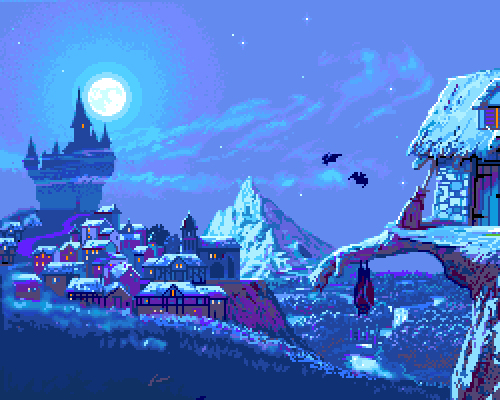
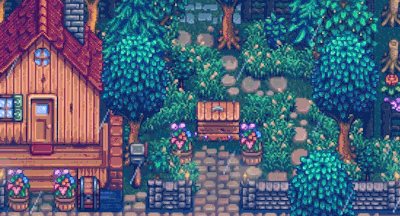

Sobre
A empresa Games A+ busca criar um local onde pessoas interessadas no ramo possam publicar suas criações e que o público consiga facilmente encontrá-las
História
A empresa começou em 2026 com duas fundadoras, Isabelle Avelino e Maria Paula Toledo, as duas fundadoras tiveram como inspiração sites como itch.io e steam que possuem uma grande gama de jogos indies em suas gardes de venda, a empresa atualmente está situada apenas no ramo de comercialização de jogos indies
Missão
A nossa missão da Games A+ é aproximar os desenvolovedores e seu público alvo, tornando mais fácil a comercialização, cobrando taxas menores que grandes empresas como a steam, para desenvolvedores solo a empresa tornará estes criadoeres isentoas da taxa de publicação e irá ser cobrado um pequeno valor após a marca de 100.000 vendas

Jogos Indies
Os jogos indies são jogos desenvolvidos de maneira indepente por um único individuo ou uma empresa de pequeno porte, com narrativas envolventes e sem o investimento de grandes studios de criação de jogos. Eles se destacam por sua originalidade e são amplamente aclamados pela comunidade gamer.
Jogos indies buscam emocionar, cativas e imergir o player em uma jornada, jogos como Terraria buscam fazer com que o player chegue a seu limite, mas disponibiliza diversas dificuldades para se adaptar a vários tipos de player, os jogos indies conseguem abraçar seu público usando feedback da comunidade para tornar o jogo gradativamente melhor
Não há somente jogos como Terraria que buscam testar os limites do jogador, mas também jogos para relaxar para jogadores mais casuais que não buscam desafios, como exemplo o jogo Stardew Valley que é considerado um dos jogos mais relaxantes do mundo, liderando as pesquisas como um jogo que reduz estresse
